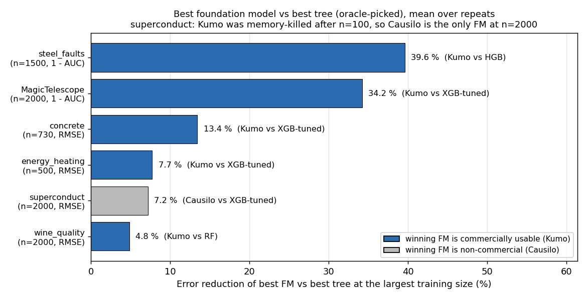
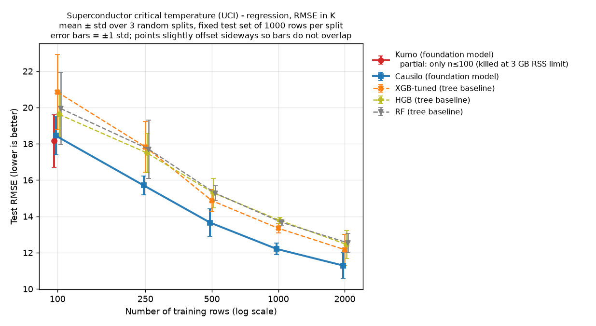
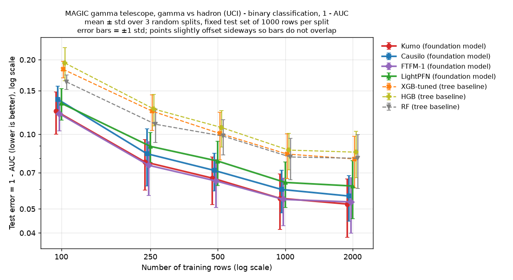

Tabular foundation models vs XGBoost on small data: a CPU learning-curve test
Most experimental property tables in chemistry and materials are small. A few hundred measured rows is normal, and a few thousand is a good day. For data like that, gradient-boosted trees have been the default for years. Tabular foundation models claim to beat them at exactly this size, with no tuning.
We wanted to see if that holds on an ordinary CPU, and what it costs, so we ran a learning-curve test: four foundation models (FMs) against three tree baselines, on six public datasets, from 100 to 2,000 training rows. Code, results and charts are in github.com/ByungwoongYoo/tabular-fm-vs-trees.
Before any numbers, a licence note. Before using model weights or model-generated outputs commercially, check the checkpoint-specific licences. FTFM-1 weights are CC BY-NC 4.0: the public weight licence does not permit commercial use without separate permission, though its model card allows benchmarking and publishing results. Causilo weights are under the Causilo License v1.0, which needs a separate licence for commercial or production use of the model or its outputs, and for hosted or API use even when free; it has an exception for publishing scholarly results. The downloadable TabPFN-3.5 weights are also non-commercial, and we did not run TabPFN. Kumo-Tabular (OpenMDW-1.1 weights) and LightPFN (Apache-2.0, classification only) permit commercial use under their terms.
The setup
- Data: six UCI datasets, all CC BY 4.0. concrete compressive strength (1,030 rows, regression), energy_heating (768 rows, heating load; the cooling-load column is dropped), steel_faults (1,941 plates; the seven fault indicator columns are merged into one 7-class target and not used as inputs), wine_quality (6,497 wines, red and white combined with an is_red input), MagicTelescope (19,020 rows, binary) and superconduct (21,263 materials, 81 features, critical temperature).
- Metrics: RMSE for regression. ROC-AUC for classification, macro one-vs-rest for the 7-class steel_faults.
- Trees: random forest with 500 trees, HistGradientBoosting with sklearn defaults, and XGBoost tuned by a 20-config random search with 3-fold CV on the training rows only (log-loss or RMSE scoring, then a refit).
- FMs: Kumo-Tabular, Causilo, FTFM-1 and LightPFN, all with package defaults and no tuning. FTFM-1 and LightPFN only do classification.
- Splits: each repeat (seed 0, 1, 2 …) draws one test set, then training sets of 100, 250, 500 and up to 2,000 rows from the rest. Every model sees the same rows. The test sets were 300 rows for concrete, 256 for energy_heating (268 were requested, capped at a third of the data), 441 for steel_faults and 1,000 for the other three.
Everything ran on CPU only, pinned to 2 cores with 2 threads, and a watchdog killed any worker above 3,000 MB of memory.
Both the best FM and the best tree were selected using mean test scores. These are post-hoc comparisons, not estimates of a model-selection procedure on unseen data.
Results at the largest training size

| Dataset | n | Best FM | Best tree | Difference |
|---|---|---|---|---|
| steel_faults | 1,500 | Kumo 0.9793 AUC | HGB 0.9657 | +0.0136 AUC (1 − AUC down 39.6 %) |
| MagicTelescope | 2,000 | Kumo 0.9477 AUC | XGB-tuned 0.9205 | +0.0272 AUC (1 − AUC down 34.2 %) |
| concrete | 730 | Kumo 3.550 MPa RMSE | XGB-tuned 4.100 | RMSE down 13.4 % |
| energy_heating | 500 | Kumo 0.410 RMSE | XGB-tuned 0.444 | RMSE down 7.7 % |
| superconduct | 2,000 | Causilo 11.29 K RMSE (non-commercial) | XGB-tuned 12.17 | RMSE down 7.2 % |
| wine_quality | 2,000 | Kumo 0.628 RMSE | RF 0.660 | RMSE down 4.8 % |
For the classification rows the percentage is the drop in 1 − AUC; misclassification rates were not compared. Per repeat, Kumo's AUC lead over the best tree on the same split was +0.0047, +0.0150 and +0.0200 on steel_faults, and +0.0216, +0.0312 and +0.0281 on MagicTelescope.
On every dataset and at every training size, the best FM had a better mean score than the best of the three trees. The gains were large on the two classification sets and small on noisy regression. wine_quality improved by only 2.8 to 5.0 % RMSE. Kumo was ahead in all 15 size-by-repeat comparisons there (5 sizes × 3 repeats), but these share 3 test sets, so they are not 15 independent splits. At 2,000 rows its per-repeat RMSE lead was 0.035, 0.019 and 0.030.
The superconduct row needs care. Kumo was killed by the 3 GB memory guard (peak 3,025 MB) during n = 250 on this 81-feature dataset, so its curve stops at n = 100. The only complete FM curve there is Causilo's, which is non-commercial. On this dataset, in our budget, there is no commercially usable FM result beyond 100 rows.

Fewer rows for the same score: an interpolated estimate
For small-data work, the useful number is how many rows an FM needs to reach the best tree's score. We did not run the FMs at those row counts. We estimated them by linear interpolation in log n on the FM's mean learning curve, between the two measured sizes that bracket the tree's score. Per dataset we used the FM with the best average rank on test. Points where the FM already beat the target at 100 rows give only a lower bound, so we dropped them and did not extrapolate. That left 20 of 27 points.
The median tree/FM training-row ratio was 1.97: the FM needed an estimated 51 % of the rows. The range was 1.36 to 8.76. At the largest size the ratio was 1.62 on concrete, 1.40 on energy_heating, 2.83 on steel_faults, 2.09 on wine_quality, 1.94 on superconduct and 8.76 on MagicTelescope.
The 8.76 on MagicTelescope is FTFM-1 (CC BY-NC weights), with an estimated ~228 rows to match tuned XGBoost at 2,000. FTFM reports known benchmark overlap from pretraining; whether either classification dataset used here is affected remains unverified. Kumo's estimate on the same dataset is ~240 rows (ratio 8.35).

What it costs on a CPU
Timing depends on the implementation: Kumo and Causilo spent most of their time in prediction, while FTFM-1 took 158 s to fit on steel_faults (n = 1,500, mean per split). Our fit time starts at model construction, so it includes loading FM weights from the local cache. For the tuned XGBoost it includes the whole 20 × 3-fold search plus the refit: 66 s per split on superconduct. Random forest fitting took up to 13 s.
- At n = 2,000, Kumo needed 63 to 86 s to predict 1,000 test rows and Causilo 15 to 64 s. Tree prediction took at most 0.13 s for the same rows. Prediction ran in batches of 500 rows.
- Kumo used 2.4 to 3.0 GB of memory, right at our 3 GB cap. Causilo reached 2.4 GB on superconduct.
- LightPFN was the cheap one: 2.5 to 2.8 s per split at the largest size and about 440 to 460 MB. It was the weakest FM on classification, but it still beat the best tree in 29 of 30 size-by-repeat comparisons.
These are observed times on one shared 2-core machine, and we did not control for other load on it. Prediction time may limit larger screening jobs; we did not test that workload.
Limitations
- Six small, mostly numeric public datasets. Nothing categorical-heavy, time-dependent or large.
- We did not check whether these datasets appear in any FM's pretraining data. FTFM's model card says its name-based filter missed a small number of benchmark tables without naming them, so overlap with MagicTelescope or steel_faults is unverified either way.
- Only 3 to 5 repeats and no formal significance tests. Win counts are size-by-repeat comparisons on shared test sets.
- Conclusions are limited to the three tree baselines tested: a 20-config XGBoost search, random forest and HistGradientBoosting. No CatBoost or LightGBM, no feature engineering.
- All timings and the Kumo memory failure are specific to 2 CPU cores and a 3 GB cap. A GPU or more memory would change both.
What we would do with this
These results support testing a tabular FM alongside the tree baselines on small numeric datasets. Check the licence of the exact checkpoint before you use its weights or outputs in commercial work. Of the models tested, Kumo permits commercial use under its terms, and so does LightPFN for classification. Keep a tree baseline anyway, and choose between models on a validation split rather than the test set we report here.
Also check how your test rows are chosen. A random split on molecular data can flatter any model, FM or tree; we covered that in scaffold split vs random split.
Reproduce it
The repository at github.com/ByungwoongYoo/tabular-fm-vs-trees has the benchmark script, the six datasets with citations, per-split raw results, the full report, the chart scripts, package lists for every virtual environment and the checkpoint revisions. run_all.sh runs the whole benchmark; the recorded per-model wall times add up to about 1.8 hours on our 2 cores.
Related notes
- A flash point prediction dataset you can actually train on
- Henry's law constant dataset for machine learning: cleaning Sander's compilation
- Where to download a logP dataset with SMILES (and what to check before you train on it)
- A melting point dataset for machine learning: what's in the Bradley set and how to clean it
- Five machine-learned interatomic potentials on CPU: lattice constants and bulk moduli vs experiment
- Scaffold split vs random split in chemistry ML: the same model on 13 datasets
- Solubility in organic solvents: an ML dataset and the limits of random splits